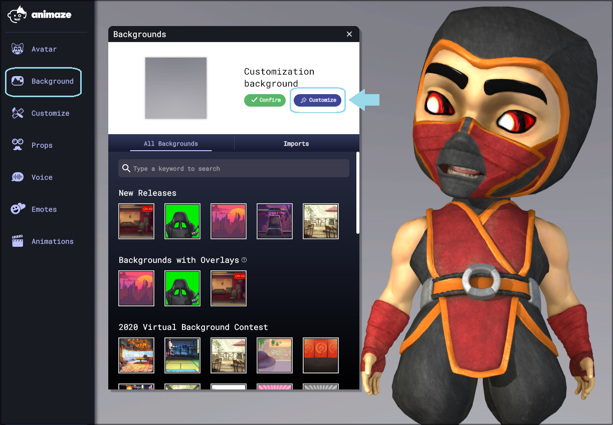
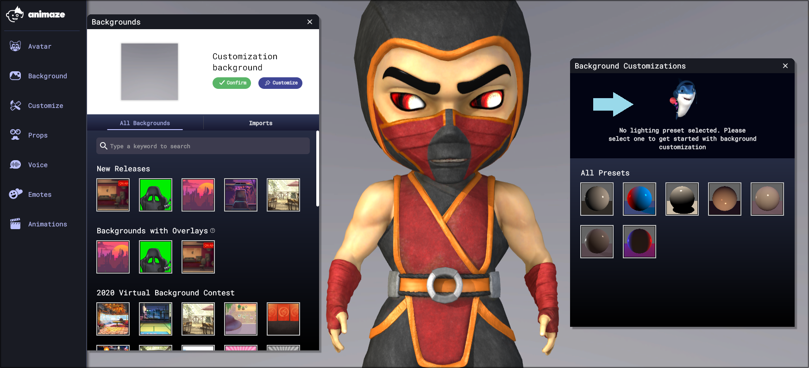
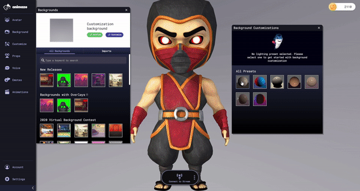
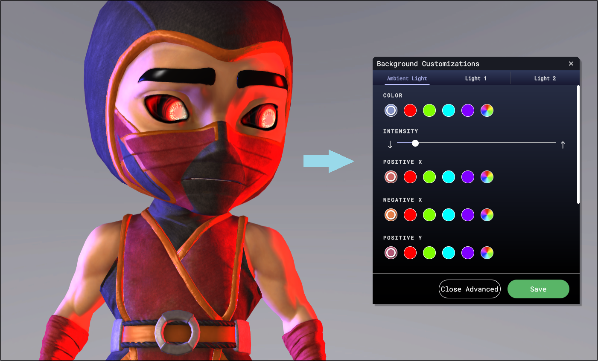

カスタムライティングをどのように使用すればよいですか?
2021年2月から、Animazeアプリに背景のライティングをカスタマイズするオプションが追加されました。これによりアバターに独自の見た目を設定できます。7つのプリセット(サイバーパンク、地獄、3ポイントライトなど)から1つを選択するか、最大4つのライトを使用してオリジナルのカスタムライティングを作成できます。

ライティングプリセット
次の手順で設定します:
始めにAnimazeアプリを開き、メニューバーの「背景」ボタンをクリックします

「背景」ウインドウが開いて、使用したい背景を選択し(またはすでに追加されている背景を選択し)、「カスタマイズ」をクリックします

実際のライティングのカスタマイズウインドウが開きます
ここで、プリセットを試し、お使いのアバターとシーンに合うライティングを捜すことができます。

適切なプリセットを選択すると、高度なカスタマイズからライトの色や強さを変更することができます。

カスタマイズが完了したら「保存」をクリックし、Animazeでのストリーミングで使用できるようになります。